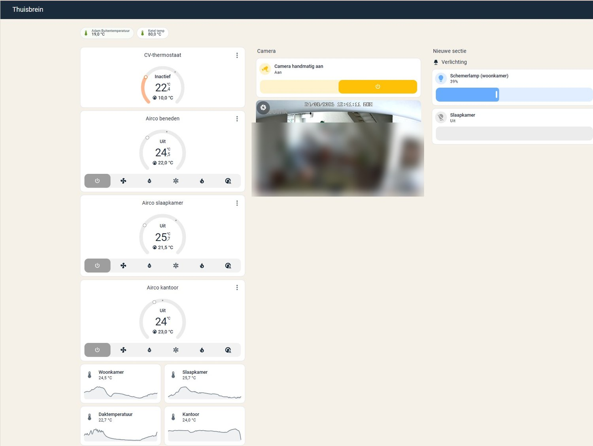
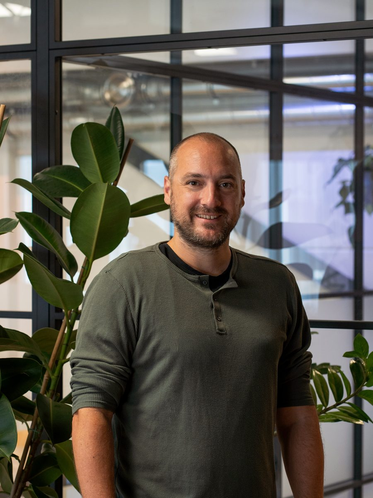

Ik help je uitzoeken wat er in jouw huis slim is om te doen — en regel het daarna ook. Advies, de juiste techniek kiezen, en installeren. Van iemand die niet aan één merk vastzit.
Zon, batterij en verbruikers wisselen de hele dag af. De kunst is ze op elkaar te laten reageren.
De salderingsregeling stopt op 1 januari 2027. Niet geleidelijk — in één keer. Wat je teruglevert aan het net levert daarna nog maar een fractie op van wat het nu waard is.
Dat weten de meeste mensen inmiddels wel. Wat ze niet weten, is wat ze er zélf aan moeten doen. Een batterij kopen? Anders gaan stoken? Niks doen en het accepteren? Het antwoord verschilt echt per huis — en er zijn genoeg partijen die je graag iets verkopen zonder die vraag te stellen.
Ik kijk met je mee wat in jouw situatie logisch is. Soms is dat een investering waard, soms is het slimmer om alleen anders om te gaan met wat je al hebt. Dat hoor je gewoon van me.
Plan een gratis intake →Eerst zelf lezen? Ik heb uitgezocht of je je panelen moet uitzetten bij negatieve prijzen — het omslagpunt ligt niet waar je denkt.
De salderingsregeling vervalt volledig per 1 januari 2027 · Bron: Rijksoverheid
Je omvormer, je batterij, je thermostaat en je airco komen van verschillende merken. Ze doen allemaal keurig hun eigen ding, maar weten niets van elkaar.
De ene partij zegt dat je een batterij nodig hebt, de andere een warmtepomp. Allebei verkopen ze precies dát. Ik zit aan geen enkel merk vast en krijg van geen enkele fabrikant commissie — dus ik kan gewoon zeggen wat er in jouw geval logisch is.
Er is genoeg te vinden op internet, maar alles gaat over iemand anders zijn huis. De vraag is wat er in jóuw situatie zin heeft — en in welke volgorde.
Dat is waar het bij mij om draait: zorgen dat de techniek in je huis samenwerkt in plaats van naast elkaar bestaat. Waar dat begint verschilt per woning — soms bij advies, soms bij een installatie, soms bij het opruimen van wat er al ligt.
Wat is er in jouw huis slim om te doen, en in welke volgorde? Ook als het antwoord "voorlopig nog even niets" is — dan heb je dat ook helder.
Welke apparatuur past bij wat je al hebt, en werkt straks nog met de rest? Minstens zo belangrijk: wat je níét hoeft te kopen.
Systemen van verschillende merken laten samenwerken en bedienbaar maken vanaf één plek. Dit is waar ik het meeste plezier in heb, en waar de meeste winst zit.
Ik regel het van begin tot eind. Wil je het liever zelf doen, dan help ik je op weg met een plan — dat mag ook.
Mijn eigen woning is de plek waar ik alles eerst uitprobeer. CV-ketel, drie airco's, zonnepanelen, thuisbatterij, slimme meter, verlichting en een camera — vijf verschillende merken, allemaal in één overzicht.

Bekijk wat er gekoppeld isEen centrale laag waar je systemen op samenkomen, zodat ze op elkaar kunnen reageren in plaats van langs elkaar heen te werken. Welke onderdelen bij jou passen — en of ze koppelbaar zijn — kijken we samen uit tijdens de intake.
Dit is een voorbeeld, geen blauwdruk — in elk huis ziet het er anders uit. Sommige merken laten zich volledig aansturen, andere alleen uitlezen. Wat bij jou kan, hoor je vóór de offerte.
Je vult vooraf een kort formulier in met een paar foto's en de merken van je systemen — wanneer het jou uitkomt. In een online videocall van een kwartiertje wordt daarna doorgesproken wat er bij jou mogelijk is. Kost je niets, verplicht je tot niets.
Ik loop je systemen langs en kijk wat er al is en wat koppelbaar is:
☀️ Zonnepanelen & batterij
🌡️ CV-ketel of warmtepomp
❄️ Airco
Je ontvangt een concrete offerte: welke koppelingen er bij jou mogelijk zijn, wat het kost, en wat je ervan mag verwachten. Pas als jij akkoord geeft, gebeurt er iets.
Hoe dit eruitziet hangt af van wat we hebben afgesproken. Vaak kan het meeste op afstand en hoef jij weinig te doen; soms kom ik langs. Wat er bij jou van toepassing is, staat gewoon in je offerte. Heb je daarnaast een vakman nodig voor de systemen zelf, dan breng ik je in contact met iemand die ik vertrouw.
Zonnepanelen, batterij, verwarming en airco — daar ligt mijn kennis, en dat is wat ik met een gerust hart aanneem. Heb je daarnaast andere wensen in huis? Vraag het gerust; als ik denk dat iemand anders je beter helpt, zeg ik dat gewoon.
Niet zeker of er in jouw woning iets te halen valt? Stuur me een berichtje met wat je hebt staan — zonnepanelen, een airco, een batterij — dan zeg ik eerlijk of het de moeite waard is om verder te praten. Kost je niets, en als het antwoord nee is hoor je dat gewoon.
Stuur een appje Koopwoning · Huurwoning · Verhuurder — vraag gerust →Na de oplevering blijf ik bereikbaar. Wil je dat ik je systeem in de gaten houd en op afstand bijwerk, dan kan dat — wat dat kost en wat je ervoor krijgt zet ik gewoon in je offerte. En belangrijk: je systeem blijft ook zónder nazorg volledig werken. Geen verplicht abonnement, geen kleine lettertjes.
Slimme apparaten die je gewoontes doorbreken zijn geen vooruitgang. ThuisBrein werkt op de achtergrond — stille sturing die je pas mist als ze er niet meer is.
"Goede automatisering merk je niet op. Maar je mist het als het er niet is."
Als je je telefoon moet pakken om het licht aan te doen, heeft de technologie gefaald. Automatisering werkt náást je gewoontes — niet ertegen.
Anderen in huis willen gewoon dat dingen werken. Een systeem dat 90% van de tijd klopt geeft 10% frustratie — en dat is onaanvaardbaar voor huisgenoten die er niet voor gekozen hebben.
Elk slim systeem gaat ooit stukgaan. Apparaten vallen dan terug op normaal gedrag — een lamp doet het gewoon, een thermostaat blijft op temperatuur.
Als je internetverbinding wegvalt, werkt je huis gewoon door. De cloud is een aanvulling — nooit een fundering.

"Een woning hoort niet uit losse systemen te bestaan. Het hoort één geheel te zijn."
Ik ben Thomas, en ThuisBrein ben ik — één persoon, geen bedrijf met een callcenter. Je weet dus wie er komt en wie je aan de lijn krijgt.
Het begon bij mijn eigen huis: zonnepanelen, een thuisbatterij, een airco en een cv-ketel, allemaal van verschillende merken en allemaal met hun eigen app. Uitzoeken hoe je die dingen laat samenwerken kostte me maanden. Dat uitzoekwerk hoef jij niet nog een keer te doen.
Ik zit aan geen enkel merk vast en krijg van geen enkele fabrikant commissie. Lever ik hardware, dan zit daar een marge op — dat vertel ik er gewoon bij, je betaalt nooit meer dan de gangbare webshopprijs, en je bent altijd vrij om het zelf te kopen. Levert het bij jou weinig op, dan zeg ik dat ook.
De intake is gratis en online. Je krijgt vooraf een kort invulformulier: een paar foto's van je meterkast en omvormer, en de merken van je systemen — invullen wanneer het jou uitkomt. Daarmee zoek ik alles vooraf uit, en in een videocall van ± 15 minuten bespreken we wat er bij jou mogelijk is. Daarna krijg je een offerte met precies wat ik ga koppelen en wat het kost. Pas als jij akkoord geeft, gebeurt er iets.
Vaak niet. Veel werk kan ik op afstand doen: als er een woningcomputer nodig is, richt ik die hier volledig in en stuur hem kant-en-klaar op — jij sluit alleen stroom en een netwerkkabel aan, en de rest maken we samen af in een korte videocall. Daardoor kan ik ook buiten mijn regio werken zonder reiskosten. Moet er wél iets ter plekke gebeuren, of heb je liever dat ik langskom? Dan kan dat in overleg — afhankelijk van de afstand.
Ik werk merkonafhankelijk. Van de gangbare omvormers, batterijen, warmtepompen en airco's is er meestal wel iets mogelijk — soms volledig aansturen, soms alleen uitlezen. Dat verschilt per merk en per model, en dat zoek ik vóór de offerte voor je uit. Twijfel je of jouw merk werkt? Stuur een berichtje, dan zoek ik het voor je uit.
In de meeste gevallen niet. Ik werk met wat je al hebt. De centrale sturinglaag komt er als extra laag bovenop je bestaande systemen — zonder grote ingrepen of vervanging.
Dat verschilt echt per woning — het hangt af van je systemen, je verbruik en je energiecontract. Daarom wordt het bij de intake voor jouw situatie doorgerekend, en staat de uitkomst gewoon in je offerte. Levert het bij jou weinig op, dan hoor je dat ook eerlijk: dan is dit niets voor je.
Ja. Je kunt ook starten met alleen zonnepanelen en een airco, of alleen een warmtepomp koppelen aan je omvormer. Het systeem groeit mee — je voegt later een batterij of ander systeem toe zonder alles opnieuw te hoeven doen.
Ja. Ik stel een beveiligde verbinding voor je in, zodat je je huis overal ter wereld kunt bedienen vanuit dezelfde app — zonder open poorten in je router. Veiliger dan de meeste cloudoplossingen, want alleen jouw eigen telefoon kan verbinding maken.
Ja, altijd. Elke knop, afstandsbediening en app blijft gewoon werken — en jouw hand wint het altijd van de automatisering. Zet je zelf de airco aan, dan ziet je ThuisBrein dat jij het was, pauzeert het netjes zijn eigen logica en pakt het later vanzelf de draad weer op. Je vecht dus nooit tegen je eigen huis. Op de voorbeeldpagina lees je precies hoe dat werkt.
Soms — en dat hangt af van je omvormer, niet van ThuisBrein. Er zit een belangrijk verschil tussen uitlezen (je opwek live in je dashboard — kan bijna altijd) en aansturen (je panelen terugregelen of uitschakelen). Sommige omvormers ondersteunen dat prima, andere laten van de fabriek uit alleen uitlezen toe. Bij de intake check ik precies wat jouw apparatuur kan — dat hoor je eerlijk vooraf. Geen beloftes die je omvormer niet waar kan maken.
Goed om te weten: ook zónder afschakelen valt er slim te sturen. In plaats van de opwek uit te zetten, zet je huis op die momenten juist verbruikers áán — de batterij laden, de boiler opwarmen, de auto laden. Zo verdampt het overschot vanzelf, en heb jij er nog wat aan ook.
Wil je precies weten wanneer terugleveren je geld kost? Dat heb ik uitgezocht in dit artikel — het omslagpunt ligt niet bij nul cent.
Dat hangt af van jouw systemen en wensen — vaak is dat Home Assistant, soms past iets anders beter. Bij de intake kijk ik wat bij jouw merken en situatie het beste werkt, en dat zet ik gewoon in je offerte. Het echte verschil zit niet in de software, maar in wie hem inricht: jij hoeft geen tweaker te zijn. Ik lever het werkend op, en je bestaande apps en knoppen blijven altijd gewoon werken.
Ja. Omdat het meeste op afstand kan, werk ik door heel Nederland. Wil je liever dat ik langskom, dan kijken we samen of dat uitkomt — dat hangt vooral af van de afstand. Vraag het gerust.
Ik blijf bereikbaar na de installatie. Wil je later iets toevoegen of aanpassen, dan kan dat altijd. Je ThuisBrein is opgebouwd om mee te groeien met wat jij nodig hebt.
Vaak wel. Die platforms zijn goed in losse slimme apparaten — lampen, stekkers, een deurbel — maar energiesystemen zoals omvormers, batterijen, warmtepompen en airco's zijn een ander verhaal. Daar komt merk-specifiek koppelwerk bij kijken dat je zelf moet uitzoeken. Dat uitzoekwerk neem ik je uit handen. Wat je al hebt kan meestal gewoon blijven bestaan naast de nieuwe opzet.
App me gerust. Dan kijken we samen wat er in jouw huis mogelijk is — vrijblijvend, en zonder verkooppraatje.
App via WhatsApp